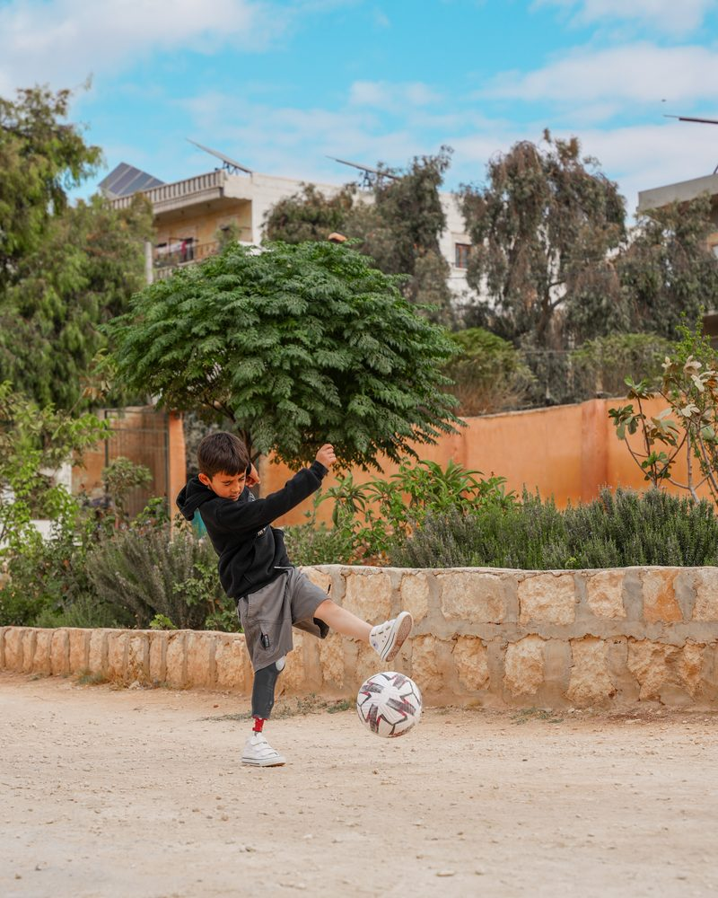
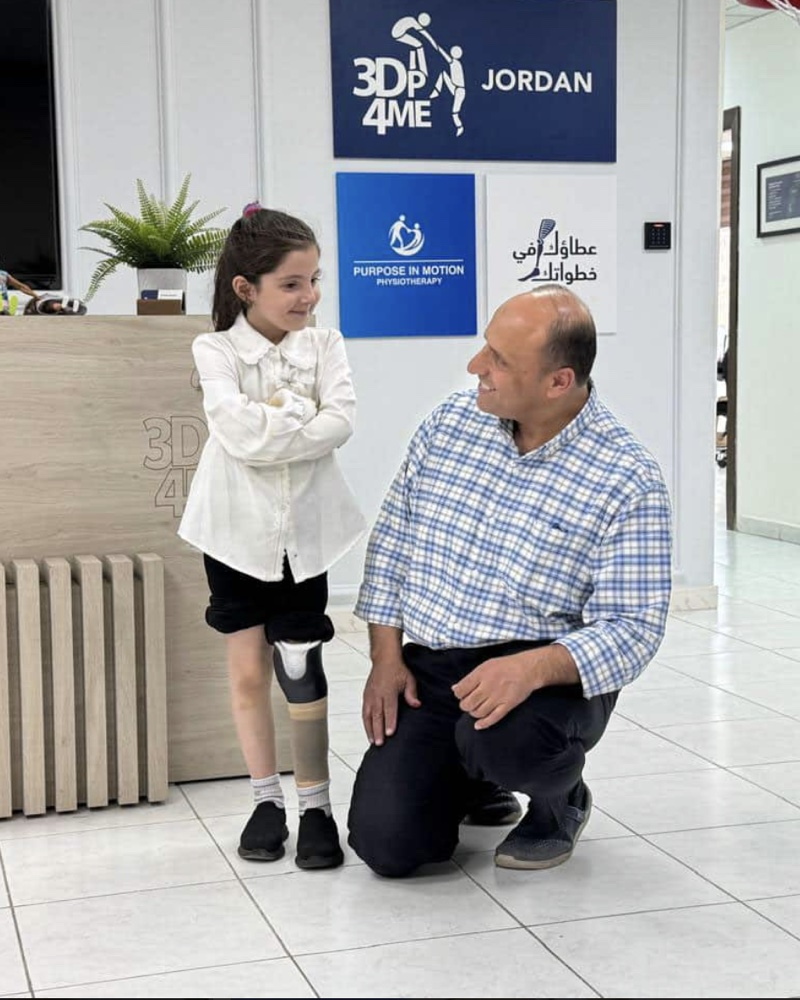

Mobility
Going where they want to go, on their own.

Hope
Daring to dream about the future again.

Belonging
Back with family, friends, and community.

Confidence
Standing tall and believing in themselves.
We provide each patient with a custom 3D printed prosthesis, which includes physical therapy, psychosocial support, and home visits to check maintenance requests.

Going where they want to go, on their own.
Daring to dream about the future again.
Back with family, friends, and community.

Standing tall and believing in themselves.